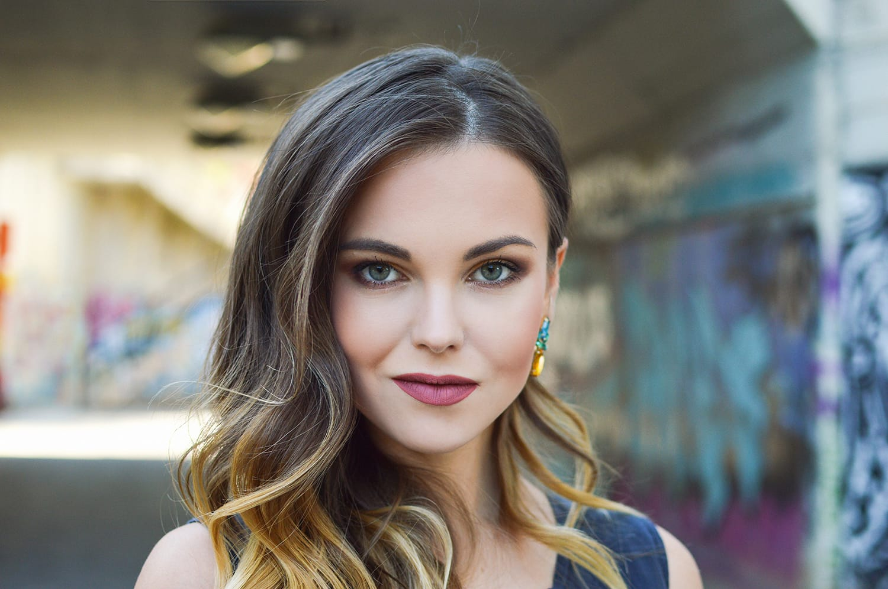
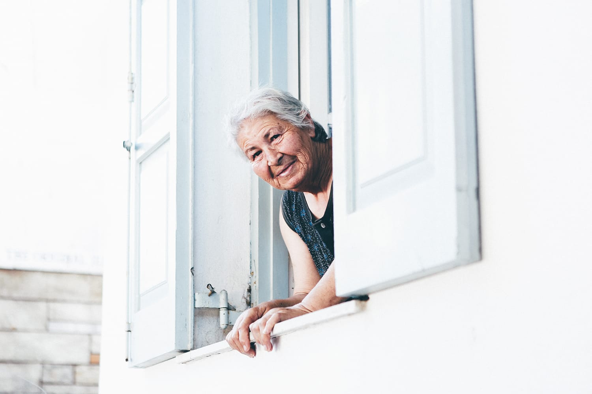
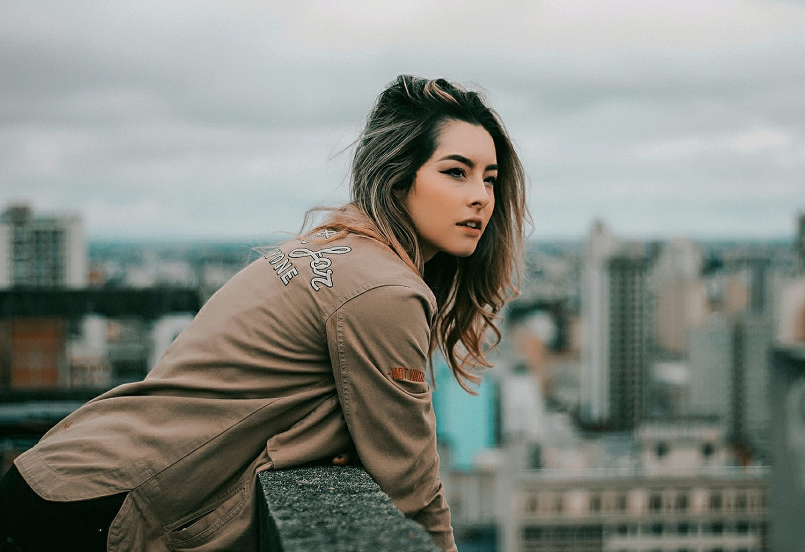
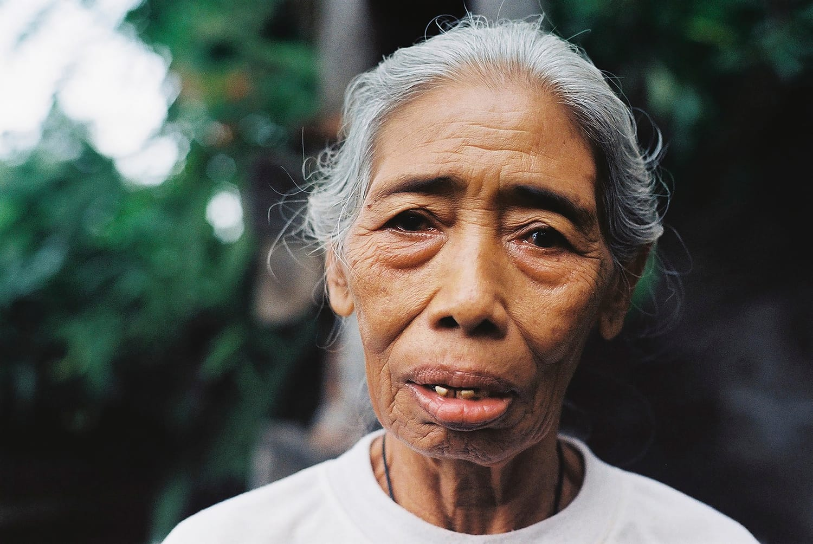

27 Oct 2019
Author : Nathachai
หลายคนคงชื่นชอบในการถ่าย Portrait เพราะเป็นเรื่องใกล้ตัว ที่เราถ่ายได้ทั้งเพื่อน ครอบครัวหรือคนรัก ซึ่งถือว่าเป็นศิลปะอย่างหนึ่งที่ช่างภาพจะต้องจินตนาการและถ่ายทอดออกมาในช็อตเดียว ก่อให้เกิดเรื่องราวที่มีพลัง ขณะที่เทคนิคหรือการถ่ายภาพที่ดีนั้นสามารถเรียนรู้ได้ แต่การจะถ่ายภาพเพื่อให้สื่ออารมณ์ หรือรายละเอียดอื่นๆ ของคนย่อมต้องอาศัยการฝึกฝน และในบทความนี้ เราจะมาเริ่มจากทริคเบื้องต้นและสิ่งที่สำคัญที่สุดในการถ่าย Portrait ที่คุณไม่ควรมองข้าม
การถ่ายภาพทุกๆ แนวให้พยายามใช้สภาพแสงจากธรรมชาติให้มากที่สุดเท่าที่จะทำได้ เพราะแสงจากธรรมชาติจะนุ่มนวลโดยเฉพาะในการถ่าย Portrait ควรเลี่ยงการวางตัวแบบที่โดนแสงจากดวงอาทิตย์ตรงๆ เพื่อไม่ให้เกิดความเปรียบต่างระหว่างแสงสว่างและเงา หรือจะใช้แผ่นสะท้อนแสงเพื่อให้แสงนุ่มขึ้นก็ได้เช่นกัน
หากใครชอบถ่าย Portrait ใน indoor ลองให้ตัวแบบไปอยู่ใกล้ๆ หน้าต่าง จะได้แสงจากธรรมชาติ และให้ตัวแบบยืนหันข้างจะดีกว่า ซึ่งจะทำให้ได้แสงที่นุ่มนวลในการถ่าย Portrait นอกจากนี้ควรใช้แฟลชเมื่อจำเป็นเท่านั้น และให้เลือกใช้ softbox หรือ diffuser เพื่อเลี่ยงการเกิดเงาที่ใบหน้าของตัวแบบดีกว่า
เพราะดวงตาเป็นหน้าตาของหัวใจ ดังนั้นการถ่ายภาพ Portrait ดวงตาจึงเป็นอวัยวะสำคัญของตัวแบบ เพราะสามารถแสดงอารมณ์และความรู้สึกได้อย่างดี เวลาถ่าย Portrait ก็เลยต้องโฟกัสให้ดวงตาคมชัด หากดวงตาเบลอก็เป็นเหตุให้ทำลายภาพของคุณได้ แม้ว่าหลายๆ อย่างจะคมชัด แต่ถ้าคุณให้ตัวแบบหันข้าง ก็ให้โฟกัสที่ดวงตาที่อยู่ใกล้กับกล้องที่สุด
เมื่อถ่าย Portrait แบบ close-up ที่ใบหน้าจะเต็มเฟรมภาพ ซึ่งจะพลาดการโฟกัสและสิ่งที่เบลอจะสังเกตเห็นได้ง่าย ก็ให้ลองโฟกัสที่ม่านตา เพราะการโฟกัสไปที่ม่านตาจะช่วยลดปัญหาของการเบลอได้
การจัดองค์ประกอบก็เป็นพื้นฐานอีกอย่างที่สำคัญ ในการถ่ายภาพ Portrait การใช้สิ่งของตีกรอบตัวแบบก็จะเป็นการช่วยให้คนที่ชมภาพอยู่ โฟกัสไปที่ตัวแบบ เป็นการเน้นให้เกิดเอกลักษณ์ที่โดดเด่นขึ้น และยังเป็นการช่วยเพิ่มพร็อปหรือองค์ประกอบที่น่าสนใจเข้าไปในภาพของคุณได้อีก
โลเกชั่นเป็นกุญแจสำคัญหนึ่งของการถ่ายภาพ Portrait เพราะโลเกชั่นดีๆ สามารถสื่อคาแรกเตอร์ลงในภาพได้ และการเลือกโลเกชั่นก็มีความหมายต่อตัวแบบ เป็นสิ่งที่สามารถบอกเล่าเรื่องราวลงไปได้ เมื่อเราจะเลือกโลเกชั่น ให้มองหาจุดถ่ายภาพที่มีเอกลักษณ์และความสวยงามเฉพาะตัวจะดีกว่า เช่น อุโมงค์ทางเดิน หรือสถาปัตยกรรมรูปร่างแปลกๆ ก็จะทำให้ Portrait โดดเด่นขึ้น
ระยะห่างระหว่างคุณกับตัวแบบก็เป็นอีกปัจจัยหนึ่งที่ไม่ควรมองข้ามในการถ่าย Portrait ถ้าเราต้องการเน้นใบหน้าและอารมณ์ของตัวแบบ ก็ให้เข้าไปถ่ายใกล้ๆ ตัวแบบ และอาจจะเน้นใบหน้าของตัวแบบ แต่เมื่อต้องการรายละเอียดรอบๆ เพื่อบอกเล่าเรื่องราวด้วย ก็ให้ใช้เลนส์มุมกว้างในการจับภาพ เพื่อให้เห็นบรรยากาศรอบๆ
เมื่อคุณนำรายละเอียดรอบๆ เข้าไปในเฟรมภาพ ก็ควรระวังด้วยว่าจะกวนสายตา และทำให้ละสายตาจากตัวแบบได้ มีทางแก้คือให้ใช้รูรับแสงกว้ง เพื่อให้ภาพชัดตื้น ซึ่งจะทำให้โฟกัสอยู่ที่ตัวแบบและยังคงมีรายละเอียดรอบๆ ตัวแบบ
ทุกคนสามารถถ่าย Portrait ดีๆ สักใบได้ แต่ไม่ใช่ทุกคนที่จะเล่าเรื่องราวได้ด้วยการถ่ายภาพเพียงครั้งเดียว ซึ่งปัจจัยสำคัญในการเล่าเรื่องราวก็คือการถ่ายภาพโดยมีอวัยวะของคนเป็นองค์ประกอบหนึ่งด้วยนั่นเอง และสามารถดูผ่านกิจกรรมที่พวกเขาทำ หรือสีหน้าของพวกเขาที่แสดงออก และบุคลิกภาพของพวกเขา
และมีอีกเรื่องหนึ่งที่ไม่ควรมองข้ามเวลาถ่าย Portrait นั่นคือตัวแบบที่อยู่หน้ากล้องส่วนใหญ่มักจะมีความกังวล จนทำให้ภาพดูไม่เป็นธรรมชาติ ดังนั้นในตอนแรกเเราจึงต้องพยายามพูดคุย สร้างบทสนทนาเพื่อให้ผ่อนคลายก่อน ทำให้พวกเขาเชื่อมั่น จึงง่ายต่อการถ่ายภาพตัวตนและบุคลิกของพวกเขาที่แท้จริง